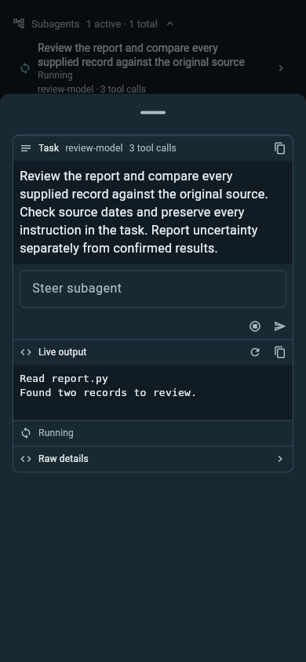

Your agent,
with you
The Android companion for Hermes Agent. Keep conversations moving, steer live work, and take the results with you.
Android 7.0+ · Requires your own Hermes server
Your agent runs on your server.
Wing brings the workspace to your phone.


Wing app captures · Demo content
Keep a hand
on the work.
Leave your desk without losing the thread. Wing keeps the conversation, the activity, and your next instruction within reach.
Inside Wing
The task, the activity,
the useful details.
Follow tool calls and delegated work. Open an agent's task and live output, then send a correction where it matters.
Explore tool activity
A change of plan?
Keep moving.
Steer work in progress, queue a follow-up, or stop the run. Hold the send control to choose what your next message should do.
Explore conversation controls
From a conversation
to something useful.
Read code and tables comfortably. Preview reports, PDFs, Markdown and supported diagrams, then save or share output files through Android.
Explore files and previews
Real Wing interfaces, shown with demo content.
The details you
use every day.
The details matter when you use them every day. Wing gives the work room to breathe and keeps the controls close.
- Your place is worth keeping.
- Search, pin and group conversations across profiles and projects. Recents brings ongoing work back into view.
- A draft should stay a draft.
- Unsent messages and staged files survive navigation and restart. Come back when you are ready.
- Bring what is already on your phone.
- Attach files and photos, use your camera, or review content shared from another Android app before sending.
- Comfort is part of the workflow.
- Choose light or dark appearance, accent colors and text size. Dictate into an editable draft or have a reply read aloud.

Your Hermes setup,
from your phone.
Wing connects to your chosen Hermes server. Your agent keeps working there; your phone gives you a way to stay involved.
Explore administration and analytics
- See where the work goes.
- Explore activity, token trends and model breakdowns. Cost estimates stay clearly labeled.
- Keep your setup in reach.
- Manage supported profiles, models, connectors and scheduled tasks. Check health and run diagnostics from your phone.
- Keep the connection yours.
- The Wing maintainer does not relay your conversations. Your Hermes server and chosen providers process your content.

Bring your agent
with you.
Free to use. Every feature available without a Wing subscription.
Install a signed APK from GitHub Releases.
Choose arm64-v8a for most current phones.
What you need
Android 7.0 or newer and a Hermes server with its dashboard, Desktop Gateway and a configured model provider, reachable from your phone.
Use HTTPS or an encrypted private network for remote access. Your server and model providers may have their own costs.
Set up your Hermes serverDoes Wing run the agent on my phone?
Your agent runs on your Hermes server. Wing brings its conversations and supported controls to Android. Work accepted by Hermes can continue when your phone disconnects; new messages and live controls need a connection.
Will I get notifications when I leave the app?
Wing can notify you about replies and input requests through live connections. Android background restrictions, force-stop and network loss can interrupt delivery. The notification guide explains setup and limits.
What should I know before installing?
You need a reachable Hermes dashboard and Desktop Gateway; a model-provider API key alone is not enough. Read the current limitations and your APK's release notes. This page describes the current source.